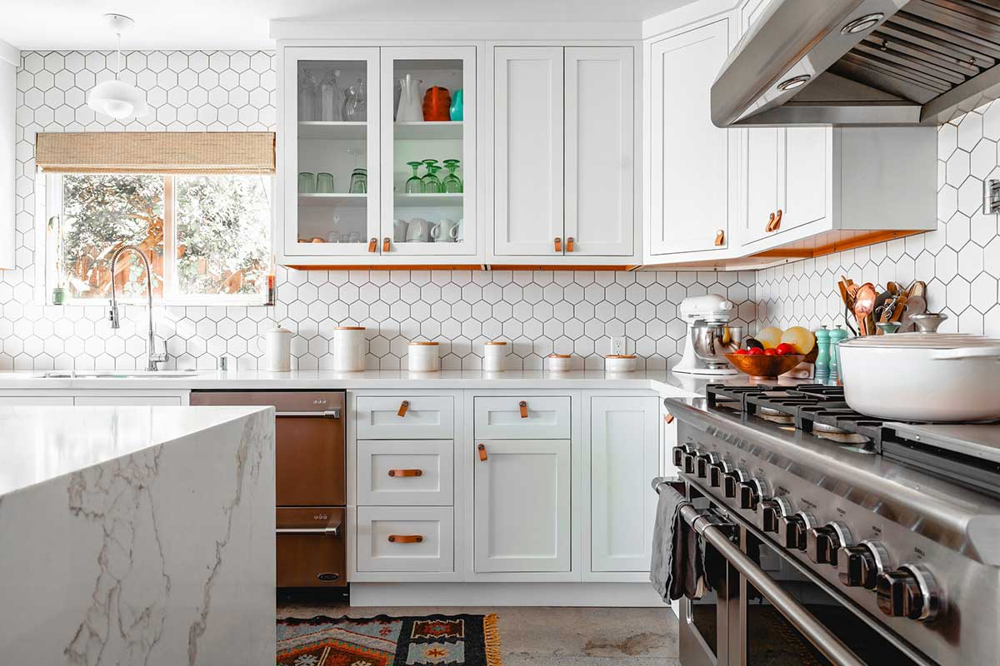
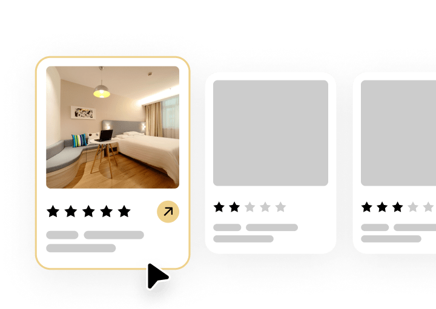
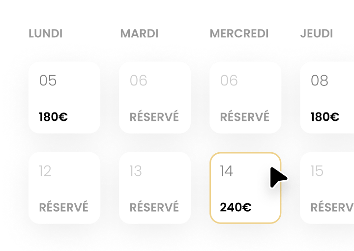
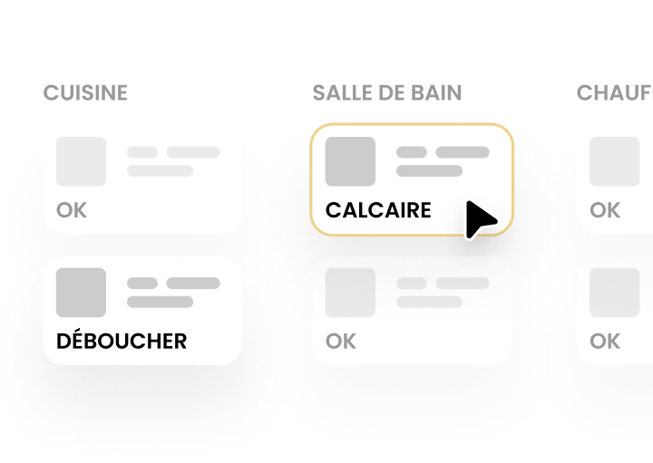

Direkt mit der Tram 8 an Basel angebunden und Nachbarstadt von Saint-Louis und Huningue, profitiert Weil am Rhein von einer hohen, kaum saisonalen Nachfrage: Geschäftsreisende, Besucher des Vitra Design Museums, Grenzgänger und Gäste der Basler Messen.
Sie kassieren. Wir kümmern uns um alles.

Als deutsches Tor zum Dreiländereck bietet Weil am Rhein seltene Vorteile: eine direkte Tram-Verbindung (Linie 8) ins Basler Zentrum in wenigen Minuten, die unmittelbare Nähe zum EuroAirport Basel-Mülhausen-Freiburg sowie das weltbekannte Vitra Design Museum und den Vitra Campus, die das ganze Jahr über ein internationales Publikum aus Designern, Architekten und Touristen anziehen. Hinzu kommen die konstante Nachfrage durch Basler Messen und Kongresse (Art Basel, Messe Basel) und ein stetiger Strom an Geschäftsreisenden. Das Ergebnis: eine hohe, kaum saisonabhängige Auslastung — ideal für eine gut verwaltete Ganzunterkunft. Unsere dynamische Preisgestaltung nutzt die Nachfragespitzen grenzüberschreitender Events, um Ihre Einnahmen zu maximieren.

Titel, Beschreibung und Profifotos, die Buchungen maximieren.

Preise nach der Nachfrage von Basel / Vitra / Messen für maximale Einnahmen.
Mehrsprachiger Empfang und vollständige Gästebetreuung.
Professionelle Reinigung und Hotelwäsche nach jedem Aufenthalt.

Unser Handwerkernetzwerk im Dreiländereck reagiert schnell.
Optimiertes Ranking auf Airbnb, Booking und weiteren Plattformen.
Ja. Conciergerie 3F ist im gesamten Dreiländereck tätig, Weil am Rhein inklusive. Dank unserer Kenntnis aller drei Märkte — Frankreich, Schweiz und Deutschland — positionieren wir Ihr Inserat vor den richtigen Gästen, in der richtigen Sprache.
Ja: die Nähe zu Basel, die direkte Tram, der EuroAirport, der Vitra Campus und internationale Messen sorgen das ganze Jahr über für anhaltende Nachfrage — mit deutlich geringerer Saisonalität als bei einem reinen Touristenort.
Das hängt von Größe, Lage und Ausstattung Ihrer Immobilie ab. Fordern Sie eine kostenlose Einschätzung an: Wir antworten innerhalb von 24 Std. mit einer persönlichen Prognose.
Kostenloses Angebot, Antwort in 24 Std. Unverbindlich.
Kontakt aufnehmen →